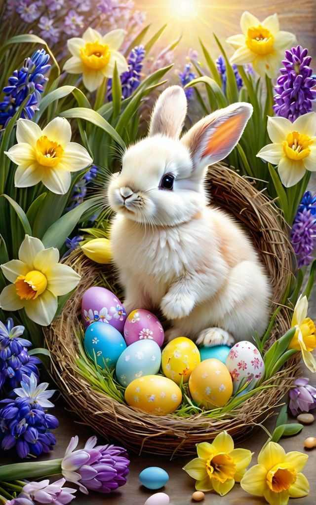

Miről szól a húsvét
A húsvét a kereszténység legnagyobb ünnepe, az "ünnepek ünnepe" (sollemnitas sollemnitatum). Idén húsvétvasárnapot és húsvéthétfőt április 5-én és 6-án ünneplik a nyugati keresztény egyházak. A húsvét Jézus Krisztus feltámadásának és vele az emberiség megváltásának ünnepe. Időpontja a 325-ben tartott első niceai zsinat döntése értelmében a tavaszi napéjegyenlőséget követő holdtölte utáni első vasárnap (március 22. és április 25. között), ehhez igazodik az egyházi év valamennyi változó idejű, úgynevezett mozgó ünnepe.
Korábban
A keresztény ünnep az ószövetségi pászka ünnepéből nőtt ki, ennek az előképnek a keresztény tanítás szerinti beteljesedése Jézus Krisztus átmenetele a halálból a feltámadott életre. Jézust a zsidó húsvét előtt ítélte halálra Poncius Pilátus, nagypénteken keresztre feszítették, és vasárnap hajnalban, föltámadván a halálból, megmutatkozott tanítványainak.
Az ünnepet negyvennapos, a hamvazószerdától nagyszombatig tartó böjti időszak készíti elő, központi liturgiája a nagyszombat esti-éjszakai húsvét vigíliája (vigilia paschalis). Ekkor ünneplik a világosság győzelmét a sötétség, az élet győzelmét a bűn és halál fölött, amiben egybefonódik a kereszthalál és a feltámadás. A nagyszombat napján szentelt húsvéti gyertya a feltámadott Üdvözítőt a világ világosságaként jelképezi.
Húsvétvasárnap ünnepélyes szentmisét tartanak. A feltámadás napján a pápa a Szent Péter téri ünnepi misén mondja el hagyományos húsvéti üzenetét és Urbi et orbi (a városhoz, vagyis Rómához és a világhoz intézett) apostoli áldását. A katolikus egyházfő számos nyelven köszönti a híveket, magyarul a Krisztus feltámadott, Alleluja szavakkal.
A húsvét elnevezés a böjti időszak végére utal, mert ekkor lehet újra húst enni. A húsvétvasárnapi szertartásnak része a húsvéti ételek (bárányhús vagy sonka, kalács, tojás, bor) megáldása. A szentelés után siettek haza, mert a néphit szerint a lemaradó még abban az évben meghal, míg az elsőnek hazaérő első lesz az aratásban. A szentelt étel maradványainak varázserőt tulajdonítottak: a tojás héját a veteményre szórták, a kotlós fészkébe tették vagy meghintették a vetést, hogy jégverés, üszög kárt ne tegyen benne.
Húsvéthétfőhöz fűződő népszokás a locsolás és ennek jutalmául a festett tojás ajándékozása. A locsolkodás alapja a víz tisztító, termékenységvarázsló erejébe vetett hit. A tojás a belőle kikelő madárral Jézus újjászületését, a népi hiedelem szerint az életet, a piros szín Jézus kiontott vérét jelképezi. A locsolkodó vers és a kölnivel való locsolkodás később terjedt el, ahogy az ajándékot hozó húsvéti nyúl képzete is. A nyúl szintén a termékenység és az élet ciklikus megújulásának jelképe, de a gyermekeket megajándékozó nyúl meséje csak a 16. századtól adatolható.
A húsvéthétfőt régebben - a locsolkodás szokására utalva - vízbevető, vízbehányó hétfőnek is nevezték. A nap a fiatal lányok és legények mulatságainak egyik legfontosabb alkalma, igazi tavaszünnep volt szabadban töltött szórakozással. Az ünnepen országszerte húsvéti bálokat rendeztek.
Húsvéti locsoló vers
Húsvét reggelén kel útra a nap,
Locsolni hívlak én, kedves barát.
Kosárban hozom a szép virágokat,
Locsolóvízzel frissítem arcodat.
Kacsint a nap sugarával, mosolyog az ég,
Húsvéti ünnepre mindenki kész.
Locsolóként járok, vidám szívvel játszom,
Hagyj hát, hogy húsvéti örömöt hozzak!
Tavaszi illat leng a szellőben,
Kicsi locsolómadarak dalolnak éppen.
Hívnak a házak, a kertek, az utak,
Húsvéti locsolóként én is járok már!
Húsvéti jókívánságokkal érkezem hozzád,
Kívánok neked boldogságot, szeretetet, áldást bátran.
Hagyjad, hogy locsoljam meg arcod friss vízzel,
Húsvéti ünnep legyen vidám és békés mindörökké!
